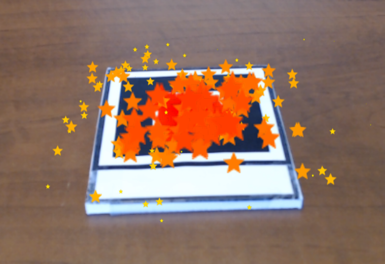
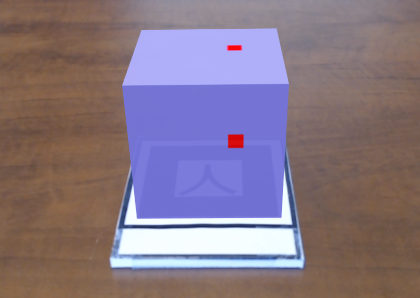

Animating (rotating) a globe attached to a marker, using the built-in animation component.
c.palmer Ostmodern
| Diamond 3D model
A single gltf model attached to a marker. TODO: Improve the lighting entity |
| Multi-Textured Articles Cube
A cube of articles with different images on each side, attached to a marker. |
|
Animation
Animating (rotating) a globe attached to a marker, using the built-in animation component. |
|  | Particle Effects
Creating a particle system effect, attached to a marker.
|
 |
Scripting
Rotates a globe attached to a marker, by writing an A-Frame component and modifying the underlying Three.js object. |
|  | Block Canvas Textures
Using an HTML canvas as the texture for a cube; creating an animation ("bouncing block") on the canvas and updating the cube texture. |
| Video Image Tracker
Video Mounted on a marker image |